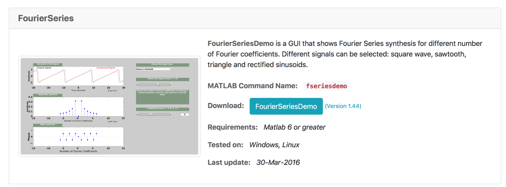

Lab 5: Fourier Series
Preamble
Associated Class Notes
This lab supports the materials covered in Chapter 4 Fourier Series of the course notes. You may wish to refer to worksheet 9 and worksheet 10 for additional examples to try.
Other formats
This document is available in HTML format for online viewing and PDF for printing.
Acknowledgements
These examples have been adapted from Chapter 7 of Stephen Karris, Signals and Systems : With MATLAB Computing and Simulink Modeling (5th Edition).
The Simulink model used in Lab Exercise 16 was developed by Third Year EEE Student Fahad Alqahtani as part of his Level 3 Project in 2013-2014.
Preparation
Before we start today’s lab you will need to download and install the Fourier series demo app, that was demonstrated in class, from Georgia Tech’s Educational Matlab GUIs page.
To install, visit the page and scroll down to find the Fourier Series Demo app (see image below)

Right-click on the Blue Button labelled FourierSeriesDemo and save to your lab05 folder.
Open and run fseriesdemo/fseriesdemo.m.
If MATLAB issues a message about the need to change the working directory or add a folder to the MATLAB path. Accept the choice given.
Spend some time playing with the settings and obderving the results. We will use this as a check of results of the labs to follow.
Lab Exercise 9: Computation of the coefficients of the Trig. Fourier Series
In this lab exercise we will review the Fourier series for a square wave with odd and even symmetry before going on to compute and plot the Fourier series for the triangular waveform.
We will also explore and confirm the stated results of even-, odd- and half-wave symmetries.
Before you Start
Download attached files:
and store them in your lab05 folder.
Part 1
Open the script trig_fseries.m as a MATLAB Live Script. Run the script and read through the results. Note that the script calls the TrigFourierSeries function, defined in the file TrigFourierSeries.m, which in turn calls the FourierSeries function, defined in FourierSeries.m, to calculate the trigonometric Fourier series for the square wave with odd-symmetry. In other words, it reconstructs the $a_k$ and $b_k$ Coefficients from the exponential Fourier series coefficients $C_k$.
Part 2
Save the m-file trig_fseries.m as an MATLAB Live Script ex9_1. Change the script so that it computes and plots the trig. Fourier series for the square-wave waveform with even symmetry (Section 7.4.1 in the textbook).
Note that the limits of the integration in trig_fseries.m start at 0, so you will need to construct the square wave over the period $[0, T]$ using unit step functions.
Part 3
Copy the script trig_fseries.m and save it as ex9_2. Change the copy so that it computes and plots the trig. Fourier series for the Triangular waveform (Section 7.4.3 in the textbook).
Note
Parts 2 and 3 can be added to trig_fseries and the whole submitted as a single Live Script file ex9.mlx providing that you use section headings to separate the parts and edit/add to the textual comentary to match the exercise descriptions.
Exercise 10: Simulating Wave Anaysis
Downoad and open the Simulink model fourier_example.slx. Examine the settings for the sine terms and compare the amplitudes and frequencies of the settings with the results of running trig_fseries.m. Run the simulation and view the reconstructed signal and the spectrum.
Part 4
Change the settings so that the Simulink model uses the coefficients from the square-wave even-symmetry result. Simulate and capture the time and spectrum plots. Save your model as ex10_1.slx.
Hint: Be careful to evaluate which set of coefficients are present in the Fourier series. Are they $a_k$ or $b_k$? What do you need to change in the sine wave generators to get the right results?
Attach a screen capture of the spectrum plot and the Simulink model to the Lab 5 page your lab submission.
Part 5
Change the settings so that the Simulink model uses the coefficients from the triangular wave result. Simulate and capture the time and spectrum plots. Save your model as ex10_2.slx.
Lab Exercise 11: Computation of the coefficients of Exponential Fourier Series
In this lab exercise we will review the Fourier series for a square wave with odd and even symmetry before going on to compute and plot the Fourier series for the triangular waveform.
We will also explore and confirm the stated results of even-, odd- and half-wave symmetries.
Before you Start
Download the attached file:
Part 6
Open the script exp_fseries.m as a Live Script, run it and examine the results. Note that the script calls the FourierSeries function defined in TrigFourierSeries.m to calculate the exponential Fourier series for the square wave with odd-symmetry.
Part 7
Copy the script exp_fseries.m and save it as ex11_1. Change the copy so that it computes and plots the exponential Fourier series for the square-wave waveform with even symmetry (Section 7.4.1 in the textbook). Hint: Use the same definition of f(t) that you used in Exercise 9.
The Simulink model plots the Power Spectrum of the simulated reconstructed signal. To plot the power spectrum of a exponential Fourier series we need to produce a stem plot. Each stem in the power spectrum is computed using $\sqrt{C_k C_K^*}$ (see Parseval’s Theorem in the notes). In MATLAB this would be C(k)*conj(C(k).
Plot the Power Spectrum of the signal from exponential Fourier series coefficients computed in this section. Compare the computed power spectrum with the simulated power spectrum. \emph{Note}: expect dome differences!
Part 8
Copy the script exp_fseries.m and save it as ex11_2. Change the copy so that it computes and plots the exponential Fourier series for the full-wave rectified sinusoidal waveform (Note: f(t) = abs(sin(t)) (Section 7.4.5 in the textbook).
Note
As for Exercise 9, parts 7 and 8 can be added to exp_fseries and the whole submitted as a single Live Script file ex11.mlx.
What to turn in
You should attach your modified versions of the example file as a single Live Script or separate scripts to the Lab 5 submission page in OneNote. Marks will be awarded according to how many parts of Exercises 9-11 have been completed. You should attach a copy of your MATLAB Live Scripts named ex9_1, ex9_2, ex11_1, ex11_2, copies of your Simulink models ex10_1.slx and ex10_2.slx plus screen shots of the harmonic waveforms generated.
If you wish, you can submit all parts of Exercises 9 and 11 in single Live Script files (I suggest that you name these ex9.mlx and ex11.mlx respectively) providing that each part is separated by properly titled sections.
Remember, whichever method you use, you should ensure that you use the Live Script editor’s text features to add emplanatory text to your MATLAB code.
When you have finished attaching your work, complete the claim form and turn-in your assignment through Teams.
Claim
Up to 2 marks can be claimed if you complete Exercise 9, 1 mark for Exercise 10 and an addition 2 marks Exercise 11.
See Assessment and Feedback: Labwork Assessment for a detailed marking scheme.
The deadline for claims and submission is Midnight, 22nd March.
Optional Additional Tasks: Review and Change the Code.
A problem with the scripts as provided is that the limits on the integrals are set in the range $[0, T]$. It would be convenient if this could be changed, for example when computing FS for even signals, the limits could be adjusted to $[-T/2,T/2]$.
In MATLAB we can achieve this by adding extra arguments to the function definition.
Part 9
Examine the code for the FourierSeries function that is defined in FourierSeries.m. Adapt the function definition so that the user can define the range of the Fourier Series integral. If you succeed, use the modified function to compute the Fourier series of the triangular wave form by exploiting half-wave symmetry. Save the script that does this as ex11_3.
Part 10
Examine the code that is defined in TrigFourierSeries. Note that it calls FourierSeries then computes ak and bk from the Ck coefficients. Why did I do that do you think?
If you made the suggested change to FourierSeries, provide compatible changes to your copy of TrigFourierSeries. Test it on a square wave with even symmetry (Lab 9 Part 2). Save the resulting calling script as ex9_3.
Compute the FS of the half-wave rectified cosine function. Save the resulting calling script as ex11_4.
Bonus
If you complete Parts 9 and 10 you may claim an additional 2 marks for this lab.